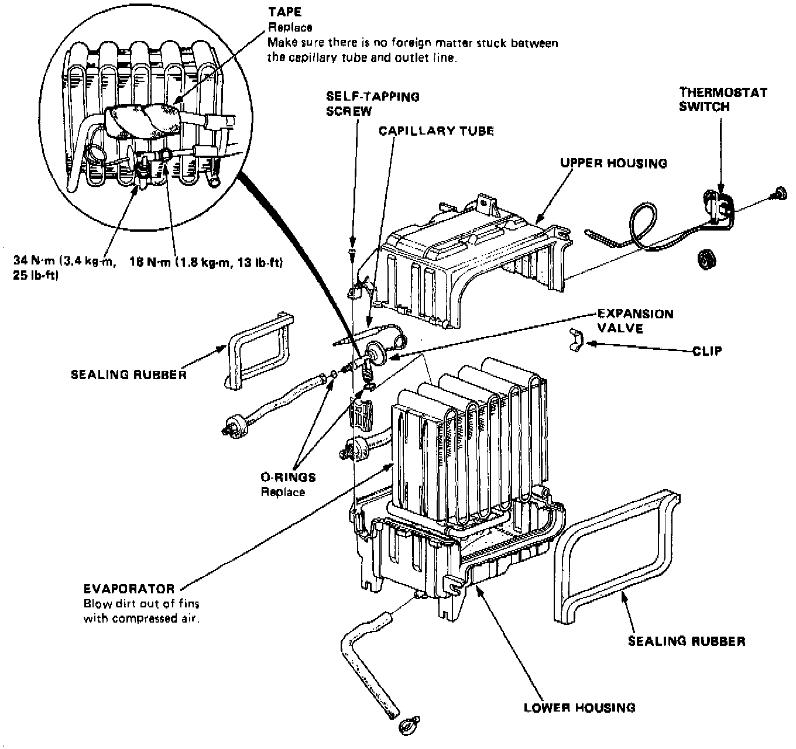

Heater-Evaporator Unit Overhaul

1. Remove the thermostat switch from the evaporator.
2. Remove the tapping screws and clips from the housing.
3. Carefully separate the housings and remove the evaporator covers.
4. Remove the expansion valve if necessary.
5. Assemble the evaporator in the reverse order of disassembly, and:
- Install the expansion valve capillary tube against the suction line, and wrap it with tape. Reassemble the upper and lower housings with clips, making sure there are no gaps between them. Reinstall the evaporator sensor in its original location.